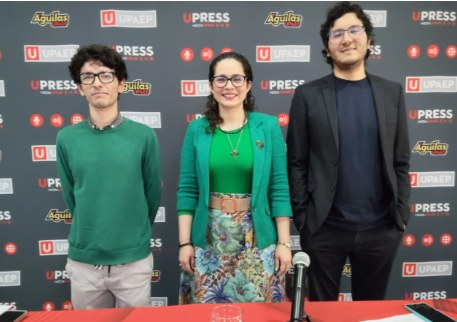

Archivo Publicaciones anteriores

Boletín N.º 02 · Internacionalización
Ciencias UPAEP: colaboración internacional, divulgación y aportes para Puebla
PISA y la enseñanza de las matemáticas, alianzas de investigación con Chile, una nueva columna en UPRESS, la ética de la inteligencia artificial y ciencia para niñas y niños.
Septiembre 2026 · 6 min
Leer
Leer

Boletín N.º 01 · Nuevo departamento
UPAEP fortalece su visión interdisciplinaria con el nuevo Departamento de Ciencias
Nace un área transversal para impulsar la investigación y la formación científica. Conoce a su director, al cuerpo docente, a las coordinaciones de área y a los once miembros del SNII.
Agosto 2026 · 3 min
Leer
Leer